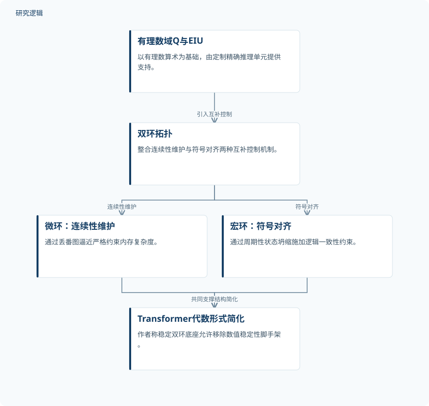

摘要解读
从模糊到精确：基于有理数运算的无限深度推理Halo架构
From Fuzzy to Exact: The Halo Architecture for Infinite-Depth Reasoning via Rational Arithmetic
解读更新 2026-10-22 21:23 · 依据公开摘要整理，未核验全文细节
大语言模型能否通过改变底层算术，减少为数值稳定付出的架构与计算代价？Halo将有理数运算与双环控制结合，尝试重新组织Transformer的计算基础。阅读价值在于理解其设计逻辑，同时分清架构主张、摘要报告与尚待核实的效率收益。
文章目录
从浮点近似出发，重问稳定性的代价
作者将现有大语言模型的计算基础称为“模糊”的浮点算术，并认为复杂残差、Pre-RMSNorm、注意力缩放和梯度裁剪等结构与数值策略，承担了防止数值崩溃的额外成本。这是本文提出架构替代方案的问题框架，不宜直接视为对这些机制全部作用的完整解释。
转向有理数域Q也带来新的困难：摘要指出，有理数算术存在位宽指数增长问题。因此，Halo不仅要处理运算的精确性，还必须控制表示与存储开销。
有理数底座与分工互补的双环控制
Halo以有理数域为基础，由定制的精确推理单元（EIU）提供支持。摘要明确描述了双环拓扑：微环负责“连续性维护”，通过丢番图逼近严格约束内存复杂度；宏环负责“符号对齐”，通过周期性状态坍缩施加逻辑一致性约束。
两种机制被组织为互补的控制方式，而非彼此替代。需要注意，“精确”算术与“逼近”机制同时出现在方案中；摘要没有展开二者如何衔接，也未给出误差控制、状态坍缩规则或EIU的具体实现。
依据摘要整理的Halo双环机制示意


概括有理数计算底座、互补双环及作者所述的结构简化关系；这是摘要示意，不是论文原图，也不表示具体执行时序。
下载 SVG图示关系说明
实线表示相邻阶段的信息流，虚线表示跨阶段联系或反馈。
有理数域Q与EIU → 双环拓扑：引入互补控制；双环拓扑 → 微环：连续性维护：连续性维护；双环拓扑 → 宏环：符号对齐：符号对齐；微环：连续性维护 → Transformer代数形式简化：共同支撑结构简化；宏环：符号对齐 → Transformer代数形式简化：共同支撑结构简化
结构简化与收敛提速：报告和预期须分开
摘要称，稳定的双环底座允许拆除数值稳定性“脚手架”，将Transformer块化简为作者称作Tabula Rasa的“干净”代数形式。但摘要没有展示具体删减后的模块、任务表现或比较结果，不能据此认定所有相关机制都已被证明可以普遍移除。
作者还称验证了“效率悖论”：梯度噪声趋于消除时，可以采用宏观学习率，并可能使总收敛时间降低数个数量级。这里的潜在提速不等于已展示的端到端加速；摘要未提供对应测量值及验证配置。关于通用智能需要连续场与离散链结合的表述，也应视为作者的总体论断。
摘要不足以判定验证规模与适用边界
本解读仅依据所提供的完整摘要，未据此声称阅读全文。摘要未交代数据集、样本规模、模型规模、比较基线、硬件条件和重复验证范围，也不足以判断标题所指的无限深度推理得到何种验证。这些属于当前资料无法判断的信息，不意味着论文没有开展相应工作。
阅读启发：精确运算如何转化为实际收益
阅读启发：后续阅读可聚焦三个相连的问题——丢番图逼近如何与精确运算共存，周期性状态坍缩如何界定逻辑一致性，以及收敛所需更新与单次运算成本如何共同决定总耗时。当前摘要尚不能回答这些问题，也不足以将所述收益外推至智能运维或结构可靠性等具体任务。
以上为本站阅读启发与建议，不是论文已验证的结论。